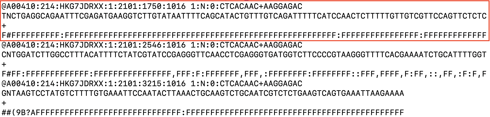
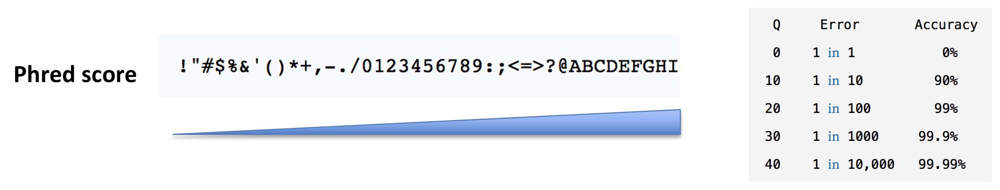
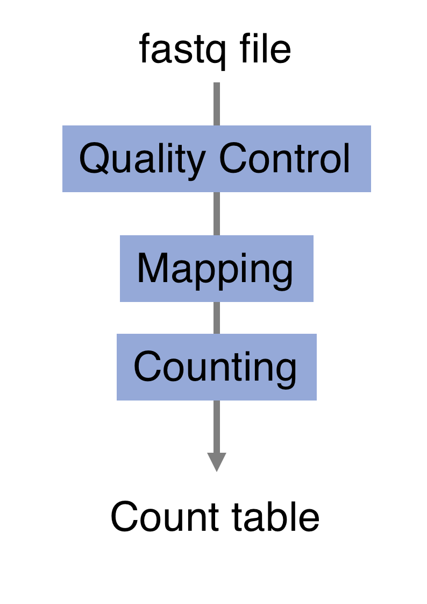
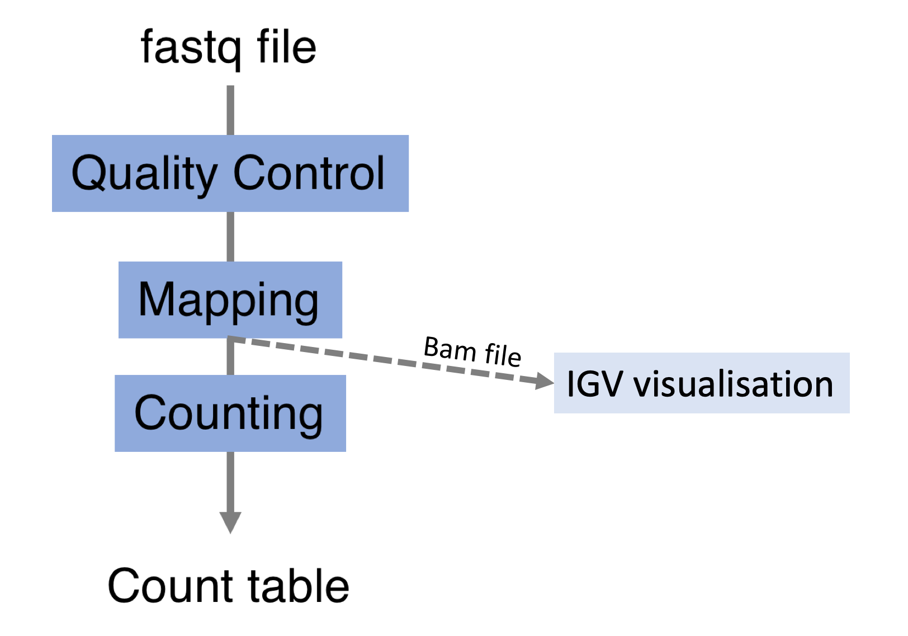
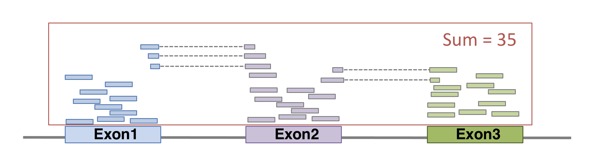

Chapter 4 High throughput sequencing
Learning Objectives
The aim of this chapter is to present high throughput sequencing by going through one of its key applications: RNAseq. It is a highly sensitive and accurate tool that has revolutionised the study of transcriptomes. The objective is to give an overview of the technology.
RNA Sequencing Data: Hitchhiker’s Guide to Expression Analysis(Van den Berge et al. 2019Van den Berge, Koen, Katharina Hembach, Charlotte Soneson, Simone Tiberi, Lieven Clement, Michael Love, Rob Patro, and Mark Robinson. 2019. “RNA Sequencing Data: Hitchhiker’s Guide to Expression Analysis.” Annual Review of Biomedical Data Science 2 (July): 139–73. https://doi.org/10.1146/annurev-biodatasci-072018-021255.) is an interesting review describing RNA-seq technology and data analysis.
We will pass through the different steps starting from the library preparation and the sequencing process. We will explore the resulting fastq files and the downstream processing pipeline including quality control, alignment and counting steps.
4.1 RNA-seq library preparation
The starting point of a RNAseq experiment is the cDNA library preparation. RNA is first isolated from cells and purified to remove ribosomal RNA which constitute the majority of total RNA. This can be done by extracting poly(A) RNA or by depleting rRNA. Purified RNA is then fragmented, reverse transcribed and adapters are ligated to both extremities to allow for amplification and sequencing.

4.1.1 Stranded versus unstranded libraries
The library preparation presented above corresponds to an unstranded protocol.
As both cDNA strands will be amplified for sequencing, about half of the reads will be sequenced from the first cDNA strand, and half of the reads will be sequenced from the second strand cDNA. But we won’t know which strand was sequenced! So we lose the information about the orientation of the transcript.
This can be avoided by using a stranded protocol. In this case, dUTPs are added during the 2nd strand cDNA synthesis and the newly synthetized cDNA strand is degradated after the ligation step. This allows to infer the transcript orientation because only the first cDNA strand will be sequenced. Indeed, if the sequence of the read corresponds to the the sense strand of DNA, it means that the gene was originally transcribed in a sense orientation. On the contrary, if the read is complementary to the sense strand of DNA, it means that it was originally transcribed in antisense.

Strand-specificity leads to lower number of ambiguous reads.
4.2 Sequencing
4.2.1 SE vs PE sequencing
Once the library is ready, molecules from the library are sequenced in a high throughput manner to obtain short sequences from one end (single-end sequencing) or both ends (pair-end sequencing). Single-end sequencing is cheaper, but Paired-end sequencing improves the ability to localise the fragment in the genome and resolve mapping close to repeat regions, resulting in less multimapping reads.

4.2.2 cluster amplification
The sequencing is done by a cluster amplification process.
The library preparation is hybridized to a flow cell coated with immobilized oligonucleotides that serve as support to hold the DNA strands in place during sequencing. The templates are copied from the hybridized primers by 3’ extension using a high-fidelity DNA polymerase. The original templates are denatured, leaving the copies immobilized on the flow cell surface.
Immobilized DNA template copies are then amplified by bridge amplification. The templates loop over to hybridize to adjacent oligonucleotides. DNA polymerase copies the templates from the hybridized oligonucleotides, forming dsDNA bridges, which are denatured to form two ssDNA strands. These two strands loop over and hybridize to adjacent oligonucleotides and are extended again to form two new dsDNA loops. The process is repeated on each template by cycles of denaturation and amplification to create millions of individual, dense clonal clusters containing ~2,000 molecules.
Each cluster of dsDNA bridges is denatured, and the reverse strand is removed by specific base cleavage, leaving the forward DNA strand. The 3’-ends of the DNA strands and flow cell-bound oligonucleotides are blocked to prevent interference with the sequencing reaction. The sequencing primer is hybridised to the Illumina adapter. Clusters are ready for sequencing.

The sequencing process is done by synthesis. A polymerase adds a fluorescently tagged dNTP to the DNA strand (only one base is able to be added per round due to the fluorophore acting as a blocking group, but the blocking group is reversible). Each of the four bases has a unique fluorophore, and after each round, the machine records which base was added. The fluorophore is then washed away and the process is repeated.
For a dynamic view of the cluster amplification process, watch the Illumina video.
4.3 fastq files
The sequence data generated from the sequencer are received in text
files called fastq files. For a single-end run, one fastq file is
created for each sample. For a paired-end run, two separated fastq
files are generated, each containing sequences from one end.
What does a FASTQ file look like?

Each entry in a fastq file consists of 4 lines:
- A sequence identifier (by convention preceded by ‘@’) with information about the sequencing run
- The sequence
- A delimiter, always starting by the sign ‘+’
- The base call quality scores. These are Phred scores, encoded using ASCII characters to represent the numerical quality scores. Each character is assigned a quality score between 0 and 40. Quality scores represent the probability that the corresponding nucleotide call is correct.

► Question
What do you think of the quality of the last sequence presented in the fastq file above?
4.4 Processing pipeline
The raw reads from fastq files will need to pass through a different tools to yield ultimately a count table, representing a snapshot of individual gene expression levels. The execution of this set of tools in a specified order is commonly referred to as a pipeline.

4.4.1 Quality control
Of course, no one will analyse the sequences from the fastq file one by one to check their quality… Rather, a software called FastQC can be used. Then, another program such as Trimmomatics can help to clean the reads.
- FastQC
FastQC allows to analyse different features of the reads and generates a report that includes several diagnostic plots to highlight any problem the data may have.
FastQC is run from the command line:
$ fastqc SampleName.fastq► Question
Try to interpret the different plots of this fastQC report from a real RNAseq fastq file.
Another report corresponding to bad quality data can be used as a point of comparison.
► Solution


- Trimmomatics
FastQC gives a global vision the quality of the sample. If it is not optimal, it is advisable to use Trimmomatics software to filter poor quality reads and trim residual adapters.
Trimmomatics has a variety of options to clean the reads. Read the manual for more information. However, a command for Trimmomatics could look something like the command below. In this case it would perform adapter removal, and perform a scan of the read with a 10-base wide sliding window, cutting when the average quality per base drops below 20.
$ java -jar trimmomatic.jar \
PE \ # paired-end
-threads 4 \ # number of threads
SampleName_1.fastq \ # fastq file for fw reads
SampleName_2.fastq \ # fastq file for rev reads
SampleName_1_clean.fastq \ # clean fastq for fw reads
SampleName_1_unpaired.fastq \ # fastq for unpaired remaining fw reads
SampleName_2_clean.fastq \ # clean fastq for rev reads
SampleName_2_unpaired.fastq \ # fastq for unpaired remaining rev reads
ILLUMINACLIP:TruSeq3-PE.fa:2:30:10 \ # cut adapter from the read.
SLIDINGWINDOW:10:20 # sliding window trimming► Question
How could you check that the trimming performed well?
► Solution
4.5 Alignment

Next step is to map the reads to determine where in the genome the reads originated from. Many different aligners are available such as HISAT2, STAR, BWA, Salmon, Subread… There is no gold standard, but some tools are better suited for particular NGS analyses (Giacomo et al. 2017Giacomo, B, K E Hayer, E J Kim, B Di Camillo, G A FitzGerald, and G R Grant. 2017. “Simulation-Based Comprehensive Benchmarking of RNA-Seq Aligners.” Nature Methods 2 (14): 135. https://doi.org/10.1038/nmeth.4106.)… In the case of RNAseq, it is important to use an aligner able to handle spliced reads.

Here we show an example of what the command could look like when using
HISAT2 aligner,
launched with default parameters. In this basic configuration,
mandatory parameters are of course the fastq file(s) and the sequence
of the genome on which the reads have to be aligned. In practical, the
genome’s sequence is not given as it is but in an indexed form.5 Genome indexing allows the aligner to quickly find
potential alignment sites for query sequences in a genome, which saves
considerable time during alignment. Frequently used genome (human,
mouse, rat…) already have indexed versions that can be downloaded
directly. When working with another reference genome, a specific
indexed genome has to be built. Of course many of other parameters can be fine
tuned (see the
manual for more
details). The alignment output file data is a sam file (see below).
$ hisat2 \
-p 6 \ # number of threads
-x genome_index \ # index for the reference genome
-1 SampleName_1_clean.fastq \ # clean fastq_file for fw reads
-2 SampleName_2_clean.fastq \ # clean fastq_file for rev reads
-S SampleName.sam # sam file nameIt is recommended to pay attention to the HISAT2 report to check the alignment rate. For a PE-end alignment it could look like this:

SAM format
The SAM format is a generic format for storing large nucleotide sequence alignments. In a SAM file, each entry gives the alignment information for a single read. Each entry has 11 mandatories fields for essential mapping information and a variable number of other fields for aligner specific information. An example of few entries from a SAM file is displayed below.
head wsbim2122_data/RNAseq_pipeline/example.sam## DRR016707.26395247 147 1 19626495 60 101M = 19626490 -106 GTAACAATGTTATCAGTAATGCTTTAAACTCCAGCACCTGGTTATGCATTTGAAACCAAGTCTGTTTCTTGTTTTGTATTTTCTCTCTGGAAGTTGTAAGG DDDDDDDDDDDDDEEEEEEEFFFFFFHCHHHJJJHHJJJJJJJJJJJJIHFJJIHJJJJJJJJJJJJJJJJJJJJJJJJJJJJIJJJJHHHHHFFFFFCCC AS:i:0 XN:i:0 XM:i:0 XO:i:0 XG:i:0 NM:i:0 MD:Z:101 YS:i:0 YT:Z:CP NH:i:1
## DRR016707.26395247 99 1 19626490 60 101M = 19626495 106 CTTCTGTAACAATGTTATCAGTAATGCTTTAAACTCCAGCACCTGGTTATGCATTTGAAACCAAGTCTGTTTCTTGTTTTGTATTTTCTCTCTGGAAGTTG CCCFFFFFHHHHHJIJJJJIJJJJJJJJJJIJJJJJJJJJJJJJJJHHIHIJJJIJJHIJJJIIIIIIJGIJJJJDHJJJHHHHHHHFFFFFFEDACEEDD AS:i:0 XN:i:0 XM:i:0 XO:i:0 XG:i:0 NM:i:0 MD:Z:101 YS:i:0 YT:Z:CP NH:i:1
## DRR016707.34969377 163 1 19626487 60 101M = 19626493 107 ATTCTTCTGTAACAATGTTATCAGTAATGCTTTAAACTCCAGCACCTGGTTATGCATTTGAAACCAAGTCTGTTTCTTGTTTTGTATTTTCTCTCTGGAAG CC@FFFFFHFHFFHGGJCIFJGHIIIIGIIIIJIIJJJIGIIIIIIGII?:BFHGHIIIIGEHHHGIIDGGH@GGIGHJGHHHHCEHDEFDDFFEEECCEC AS:i:0 XN:i:0 XM:i:0 XO:i:0 XG:i:0 NM:i:0 MD:Z:101 YS:i:0 YT:Z:CP NH:i:1
## DRR016707.34969377 83 1 19626493 60 101M = 19626487 -107 CTGTAACAATGTTATCAGTAATGCTTTAAACTCCAGCACCTGGTTATGCATTTGAAACCAAGTCTGTTTCTTGTTTTGTATTTTCTCTCTGGAAGTTGTAA CDDDDDDDDDDDDECEEEEEFFFFD?=HHHHGIIGEGIGIIIHIGDIHHGGGIIHGHIIIIGIIIGIGEIIGGGIIIIGIIIIGHDIIFHHHHFFBDD?C@ AS:i:0 XN:i:0 XM:i:0 XO:i:0 XG:i:0 NM:i:0 MD:Z:101 YS:i:0 YT:Z:CP NH:i:1
## DRR016707.42561021 161 1 19626495 60 100M1S = 19626494 0 GTAACAATGTTATCAGTAATGCTTTAAACTAAAGCACCTGGTTATGCATTTGAAACCAAGTCTGTTTCTTGTTTTGTATTTTCTCTCTGGAAGTTGTAAGA ?8?B1:BDD,,2<:C<2A<<,+A?CBFFAE<+<+2A?EEBD99:D<*?B:*:D9B:DD/BDED@)=8=B;@=)).=(=@;7A)7.==>;3);@AAA>A@3; AS:i:-8 XN:i:0 XM:i:2 XO:i:0 XG:i:0 NM:i:2 MD:Z:30C0C68 YT:Z:UP NH:i:1
## DRR016707.42561021 81 1 19626494 60 101M = 19626495 0 TGTAACAATGTTATCAGTAATGCTTTAAACTCCAGCACCTGGTTATGCATTTGACACCAAGTCTGTTTCTTGTTTTGTATTTTCGCTCTGGAAGTTGTAAG (9(??==3??>==;5(55((6.((9>;..;67>)>).5(A;;>=/))8.=>9)((?AB?92=00*;=::1)=:3=74=A7<)0<+<AAAB?=<+4AA<;== AS:i:-5 ZS:i:-19 XN:i:0 XM:i:2 XO:i:0 XG:i:0 NM:i:2 MD:Z:54A29T16 YT:Z:UP NH:i:1
## DRR016707.43465443 163 1 19626483 60 101M = 19626486 104 TGCCATTCTTCTGTAACAATGTTATCAGTAATGCTTTAAACTCCAGCACCTGGTTATGCATTTGAAACCAAGTCTGTTTCTTGTTTTGTATTTTCTCTCTG B@@FAFFFHHHHHHIIIIJJJHJJIJJIIJJJJJJJFJJJJJJJJJJJJJHIJFHJJIJJJIJJIIJIJJHIHHIIIJJJJJHEHHHFEFFFFFEDEEEEE AS:i:0 XN:i:0 XM:i:0 XO:i:0 XG:i:0 NM:i:0 MD:Z:101 YS:i:-1 YT:Z:CP NH:i:1
## DRR016707.43465443 83 1 19626486 60 100M1S = 19626483 -104 CATTCTTCTGTAACAATGTTATCAGTAATGCTTTAAACTCCAGCACCTGGTTATGCATTTGAAACCAAGTCTGTTTCTTGTTTTGTATTTTCTCTCTGGAG DDDDDDCDDDDCCDEEEEDFFFFFDBHHHHHGJJGHDJIJJIGIHJGGJJJJJJJJJJJJJHG?JJJJJJJJJJJIIJJJJIJJJJJIGHGHHFFFFFCCC AS:i:-1 ZS:i:-12 XN:i:0 XM:i:0 XO:i:0 XG:i:0 NM:i:0 MD:Z:100 YS:i:0 YT:Z:CP NH:i:1
## DRR016707.64407509 147 1 19626484 60 101M = 19626484 -101 GCCATTCTTCTGTAACAATGTTATCAGTAATGCTTTAAACTCCAGCACCTGGTTATGCATTTGAAACCAAGTCTGTTTCTTGTTTTGTATTTTCTCTCTGG DDDDDCDDDDDDEEDEEEEFFFFFFHHHHHHJJIJIGHFIHJJJIHFIHHFJJJJJIJJJJJJJIHJJJJJIJJJJJJJJJJJJJJJJHHHHHFFFFFBB@ AS:i:0 XN:i:0 XM:i:0 XO:i:0 XG:i:0 NM:i:0 MD:Z:101 YS:i:0 YT:Z:CP NH:i:1
## DRR016707.64407509 99 1 19626484 60 101M = 19626484 -101 GCCATTCTTCTGTAACAATGTTATCAGTAATGCTTTAAACTCCAGCACCTGGTTATGCATTTGAAACCAAGTCTGTTTCTTGTTTTGTATTTTCTCTCTGG CCCFFFFFHHHHHJJJJJJJIJJJJJJJJJJJJJJJJJJJJJIJJJJJJIJJDGIJJJJJJJJCGIJJJIIHHJJJHHIJJJHHHHHDFFFFFFEEEEEED AS:i:0 XN:i:0 XM:i:0 XO:i:0 XG:i:0 NM:i:0 MD:Z:101 YS:i:0 YT:Z:CP NH:i:1Field 1: Sequence ID
Field 2: SAM Flag. It gives information about the read (is it paired, aligned, is the mate read properly aligned…)
Field 3: Chromosome where alignment occurs
Field 4: Position of alignment
Field 5: Mapping quality score (read uniquely mapped (60), multiply mapped (1) or unmapped (0))
Field 6: CIGAR string. It is a representation of alignment indicating positions of match/mismatch/deletion/insertion compared to the reference.
Field 7: Reference name of the mate (Set to ‘=’ if the mate’s reference sequence is the same as this alignment’s)
Field 8: Position of mate
Field 9: Inferred fragment length
Field 10: Read sequence (reverse-complemented if aligned to the reverse strand)
Field 11: Base quality (Phred score)
Field 12: Optional. See hisat2 manual for more information.
BAM format
The BAM file is a compressed binary version of SAM file. SAM files can be easily converted into BAM files using samtools, and it is sometimes mandatory to sort the SAM/BAM by chromosomal coordinates for downstream applications.
samtools view -Sb SampleName.sam | samtools sort > SampleName.bamAlignment visualisation
Alignements described in BAM files can easily be viewed using IGV (Integrative Genomics Viewer), a very useful interactive tool for the visual exploration of genomic data.
Visualising the alignments is not part of the processing pipeline but sometimes it can be useful..

IGV requires that BAM files have an associated index file6 Indexing a BAM file allows IGV to quickly extract alignments overlapping particular genomic regions. Samtools can be used to index the BAM file. The following command would create the indexed SampleName.bam.bai file.
samtools index SampleName.bamBam file can be loaded in IGV7 Note that the index file must reside in the same directory as the bam file that it indexes, and it must have the same basename. Below is an example of visualisation of a bam file using IGV, focusing on CDKN1A gene.

Loading a BAM file creates 3 associated tracks:
Coverage Track to view depth of coverage
Splice Junction Track which provides an alternative view of reads spanning splice junctions
Alignment Track to view individual aligned reads
4.6 Counting

Now comes the quantification step. It can be performed with several tools such as htseq-count or FeatureCounts. We will describe the latter as it runs much faster. It was developed for counting reads to genomic features such as genes, exons, promoters and genomic bins. FeatureCounts takes as input SAM/BAM files and an annotation file (such as a gtf file) containing chromosomal coordinates of features.
The Gene Transfer Format (GTF) is a widely used format for storing gene annotations. Human and mouse GTF files can be downloaded easily from Ensembl or from the UCSC table browser. The first few lines of gtf annotation file for human genome assembly GRCh38 look like this:

head -n 20 wsbim2122_data/RNAseq_pipeline/Homo_sapiens.GRCh38.94.gtf## #!genome-build GRCh38.p12
## #!genome-version GRCh38
## #!genome-date 2013-12
## #!genome-build-accession NCBI:GCA_000001405.27
## #!genebuild-last-updated 2018-07
## 1 havana gene 11869 14409 . + . gene_id "ENSG00000223972"; gene_version "5"; gene_name "DDX11L1"; gene_source "havana"; gene_biotype "transcribed_unprocessed_pseudogene";
## 1 havana transcript 11869 14409 . + . gene_id "ENSG00000223972"; gene_version "5"; transcript_id "ENST00000456328"; transcript_version "2"; gene_name "DDX11L1"; gene_source "havana"; gene_biotype "transcribed_unprocessed_pseudogene"; transcript_name "DDX11L1-202"; transcript_source "havana"; transcript_biotype "processed_transcript"; tag "basic"; transcript_support_level "1";
## 1 havana exon 11869 12227 . + . gene_id "ENSG00000223972"; gene_version "5"; transcript_id "ENST00000456328"; transcript_version "2"; exon_number "1"; gene_name "DDX11L1"; gene_source "havana"; gene_biotype "transcribed_unprocessed_pseudogene"; transcript_name "DDX11L1-202"; transcript_source "havana"; transcript_biotype "processed_transcript"; exon_id "ENSE00002234944"; exon_version "1"; tag "basic"; transcript_support_level "1";
## 1 havana exon 12613 12721 . + . gene_id "ENSG00000223972"; gene_version "5"; transcript_id "ENST00000456328"; transcript_version "2"; exon_number "2"; gene_name "DDX11L1"; gene_source "havana"; gene_biotype "transcribed_unprocessed_pseudogene"; transcript_name "DDX11L1-202"; transcript_source "havana"; transcript_biotype "processed_transcript"; exon_id "ENSE00003582793"; exon_version "1"; tag "basic"; transcript_support_level "1";
## 1 havana exon 13221 14409 . + . gene_id "ENSG00000223972"; gene_version "5"; transcript_id "ENST00000456328"; transcript_version "2"; exon_number "3"; gene_name "DDX11L1"; gene_source "havana"; gene_biotype "transcribed_unprocessed_pseudogene"; transcript_name "DDX11L1-202"; transcript_source "havana"; transcript_biotype "processed_transcript"; exon_id "ENSE00002312635"; exon_version "1"; tag "basic"; transcript_support_level "1";
## 1 havana transcript 12010 13670 . + . gene_id "ENSG00000223972"; gene_version "5"; transcript_id "ENST00000450305"; transcript_version "2"; gene_name "DDX11L1"; gene_source "havana"; gene_biotype "transcribed_unprocessed_pseudogene"; transcript_name "DDX11L1-201"; transcript_source "havana"; transcript_biotype "transcribed_unprocessed_pseudogene"; tag "basic"; transcript_support_level "NA";
## 1 havana exon 12010 12057 . + . gene_id "ENSG00000223972"; gene_version "5"; transcript_id "ENST00000450305"; transcript_version "2"; exon_number "1"; gene_name "DDX11L1"; gene_source "havana"; gene_biotype "transcribed_unprocessed_pseudogene"; transcript_name "DDX11L1-201"; transcript_source "havana"; transcript_biotype "transcribed_unprocessed_pseudogene"; exon_id "ENSE00001948541"; exon_version "1"; tag "basic"; transcript_support_level "NA";
## 1 havana exon 12179 12227 . + . gene_id "ENSG00000223972"; gene_version "5"; transcript_id "ENST00000450305"; transcript_version "2"; exon_number "2"; gene_name "DDX11L1"; gene_source "havana"; gene_biotype "transcribed_unprocessed_pseudogene"; transcript_name "DDX11L1-201"; transcript_source "havana"; transcript_biotype "transcribed_unprocessed_pseudogene"; exon_id "ENSE00001671638"; exon_version "2"; tag "basic"; transcript_support_level "NA";
## 1 havana exon 12613 12697 . + . gene_id "ENSG00000223972"; gene_version "5"; transcript_id "ENST00000450305"; transcript_version "2"; exon_number "3"; gene_name "DDX11L1"; gene_source "havana"; gene_biotype "transcribed_unprocessed_pseudogene"; transcript_name "DDX11L1-201"; transcript_source "havana"; transcript_biotype "transcribed_unprocessed_pseudogene"; exon_id "ENSE00001758273"; exon_version "2"; tag "basic"; transcript_support_level "NA";
## 1 havana exon 12975 13052 . + . gene_id "ENSG00000223972"; gene_version "5"; transcript_id "ENST00000450305"; transcript_version "2"; exon_number "4"; gene_name "DDX11L1"; gene_source "havana"; gene_biotype "transcribed_unprocessed_pseudogene"; transcript_name "DDX11L1-201"; transcript_source "havana"; transcript_biotype "transcribed_unprocessed_pseudogene"; exon_id "ENSE00001799933"; exon_version "2"; tag "basic"; transcript_support_level "NA";
## 1 havana exon 13221 13374 . + . gene_id "ENSG00000223972"; gene_version "5"; transcript_id "ENST00000450305"; transcript_version "2"; exon_number "5"; gene_name "DDX11L1"; gene_source "havana"; gene_biotype "transcribed_unprocessed_pseudogene"; transcript_name "DDX11L1-201"; transcript_source "havana"; transcript_biotype "transcribed_unprocessed_pseudogene"; exon_id "ENSE00001746346"; exon_version "2"; tag "basic"; transcript_support_level "NA";
## 1 havana exon 13453 13670 . + . gene_id "ENSG00000223972"; gene_version "5"; transcript_id "ENST00000450305"; transcript_version "2"; exon_number "6"; gene_name "DDX11L1"; gene_source "havana"; gene_biotype "transcribed_unprocessed_pseudogene"; transcript_name "DDX11L1-201"; transcript_source "havana"; transcript_biotype "transcribed_unprocessed_pseudogene"; exon_id "ENSE00001863096"; exon_version "1"; tag "basic"; transcript_support_level "NA";
## 1 havana gene 14404 29570 . - . gene_id "ENSG00000227232"; gene_version "5"; gene_name "WASH7P"; gene_source "havana"; gene_biotype "unprocessed_pseudogene";
## 1 havana transcript 14404 29570 . - . gene_id "ENSG00000227232"; gene_version "5"; transcript_id "ENST00000488147"; transcript_version "1"; gene_name "WASH7P"; gene_source "havana"; gene_biotype "unprocessed_pseudogene"; transcript_name "WASH7P-201"; transcript_source "havana"; transcript_biotype "unprocessed_pseudogene"; tag "basic"; transcript_support_level "NA";
## 1 havana exon 29534 29570 . - . gene_id "ENSG00000227232"; gene_version "5"; transcript_id "ENST00000488147"; transcript_version "1"; exon_number "1"; gene_name "WASH7P"; gene_source "havana"; gene_biotype "unprocessed_pseudogene"; transcript_name "WASH7P-201"; transcript_source "havana"; transcript_biotype "unprocessed_pseudogene"; exon_id "ENSE00001890219"; exon_version "1"; tag "basic"; transcript_support_level "NA";FeatureCounts will count the number of uniquely mapped reads assigned to features (e.g. an exon) or meta-features (e.g. a gene) of the gtf file. When summarizing reads at gene level, read counts obtained for exons belonging to the same gene will be added up to yield the read count for the corresponding gene. Note that an exon-spanning read will be counted only once for the corresponding gene even if it overlaps with more than one exon.

FeatureCounts could be launched with the following command. As usual, many of other parameters can be fine-tuned (see the manual for more details).
featureCounts \
-p \ # paired (fragments counted instead of reads)
-a annotations.gtf \ # name of the annotation file
-t exon \ # feature type in GTF annotation
-g gene_id \ # Meta-features used in GTF annotation
-s 0 \ # strand-specificity
-o SampleName_counts.tsv \ # Name of the output file
SampleName.bam # bam fileHere is an example of featurecounts output file. The last column gives the raw counts of each gene in that sample.
counts_result <- read_tsv(file = "wsbim2122_data/count_data/sample1_counts.tsv.gz")
datatable(head(counts_result))► Question
Inspect the count table.
How many genes are tested ?
How many reads were assigned to genes?
Inspect the counts. What is the maximum value? How many genes have zero counts ?
Plot the distribution of counts. How does it look like?
► Solution

4.7 Preparing the count matrix
The aim of an RNAseq experiment is often to compare different types of cells, or to compare treated cells to control cells, to see if some genes are up- or down- regulated.
Once fastq files from each sample have been processed into raw counts, results can be merged in a single count matrix, were each column represents a sample, and each line represents a gene. This count matrix will be the starting point of a differential expression analysis.
## sample1 sample2 sample3 sample4 sample5 sample6
## ENSG00000223972 0 0 0 0 0 1
## ENSG00000227232 14 28 17 40 16 13
## ENSG00000278267 8 4 3 1 1 6
## ENSG00000243485 0 0 0 0 0 0
## ENSG00000284332 0 0 0 0 0 0
## ENSG00000237613 0 0 0 0 0 0► Question
Imagine you had initially 6 samples (3 control and 3 treated samples) that you have
processed independently giving the 6 counts files generated by FeatureCounts located
in the folder wsbim_data/count_data/. Use these files to create a count matrix.
► Solution
As differential expression analysis addresses relatively complex statistical concepts, it will be covered in the next chapter.
Page built: 2021-10-15 using R version 4.1.0 (2021-05-18)